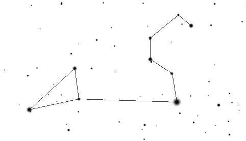

|  |
(ASTRAL) |
ASTRAL is a formal specification language for real-time systems in which a system is described as a collection of state machine specifications, where each specification represents a process type of which there may be multiple statically generated instances. Each process instance in the system executes concurrently and asynchronously with all the other process instances. Additionally, a global specification contains declarations for types and constants that are shared among more than one process type, as well as assumptions about the global environment and critical requirements for the whole system.
An ASTRAL process specification consists of a sequence of levels. Each level is an abstract data type view of the system being specified. The first ("top level") view is a very abstract model of what constitutes the process (types, constants, variables), what the process does (state transitions), and the critical requirements the process must meet (invariants and schedules). Lower levels are increasingly more detailed with the lowest level corresponding closely to high level code.
The process being specified is thought of as being in various states, with one state differentiated from another by the values of its state variables, which can be changed only by means of state transitions. Transitions are described in terms of entry and exit assertions by using an extension of first-order predicate calculus. Transition entry assertions describe the constraints that state variables must satisfy in order for the transition to fire, while exit assertions describe the constraints that are fulfilled by state variables after the transition has fired. An explicit non-null duration is associated with each transition. Transitions are executed as soon as they are enabled (i.e. when their entry assertions are satisfied) assuming no other transition for that process instance is executing.
Every process can export both state variables and transitions; as a consequence, the former are readable by other processes while the latter are executable from the external environment. Processes communicate by broadcasting the values of exported variables and the start and end times of exported transitions.
In addition to specifying system state (through process variables and constants) and system evolution (through transitions), an ASTRAL specification also defines system critical requirements and assumptions on the behavior of the environment that interacts with the system. The behavior of the environment is expressed by means of environment clauses, which describe assumptions about the pattern of invocation of external transitions. Critical requirements are expressed by means of invariants and schedules. Invariants represent requirements that must hold in every state reachable from the initial state, no matter what the behavior of the external environment is, while schedules represent additional properties that must be satisfied provided that the external environment behaves as assumed.
The computational model for ASTRAL is based on nondeterministic state machines and assumes maximal parallelism, noninterruptable and nonoverlapping transitions in a single process instance, and implicit one-to-many (multi-cast) message passing communication.